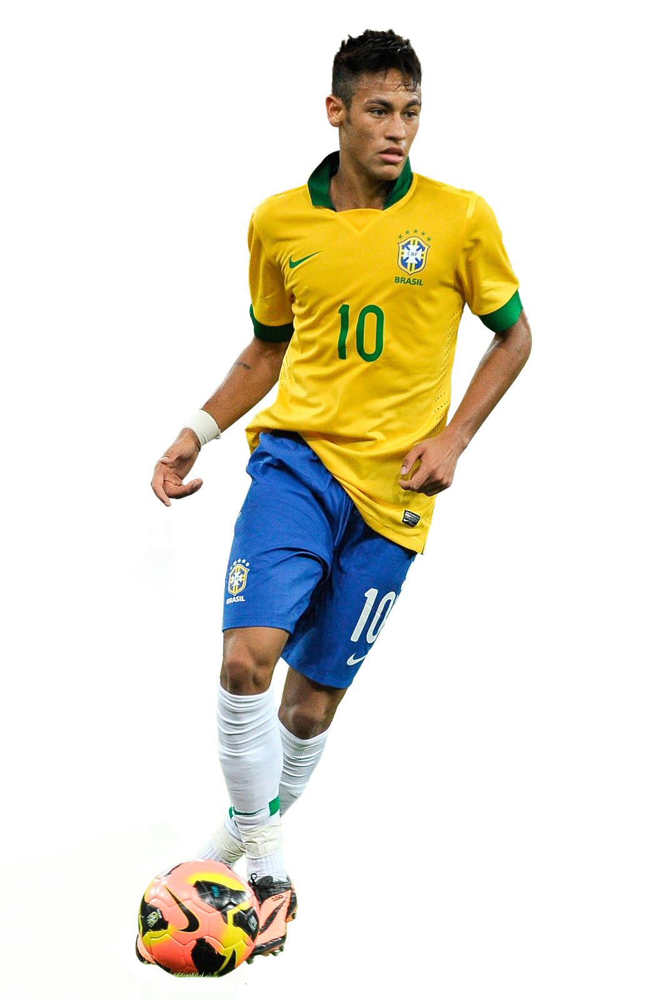

Neymar
Neymar da Silva Santos Júnior, ampliamente conocido como Neymar, es un delantero brasileño que nació en Mogi das Cruzes, Brasil, el 5 de febrero de 1992. En 2011 el premio “Futbolista del año en Sudamérica” lo recibió Neymar.
Su carrera juvenil arrancó en el club Portuguesa Santista. En 2003 entró en la cantera del Santos. Pasando por todas las categorías juveniles llegó a ser parte del primer equipo en 2009. Así debutó a la edad de 17 años y pronto anotó por primera vez. En 2010/11 sus dotes iban perfeccionándose. Se le comparaba aún con el legendario Pelé. El Santos rechazó varias ofertas beneficiosas respectivo al fichaje del joven por parte de renombrados clubes ingleses. En la siguiente campaña figuró entre los máximos goleadores de la Copa Libertadores. En 2013 decidió abandonar el club y fichó por el Barcelona.
En 2009 actuó por primera vez como miembro de la selección nacional de Brasil sub-17. Después integraba el once de Brasil en las categorías sub-20 y sub-23. A partir de 2010 es futbolista de la selección absoluta. En el pasado torneo de la Copa Confederaciones 2013 fue reconocido el mejor jugador.
